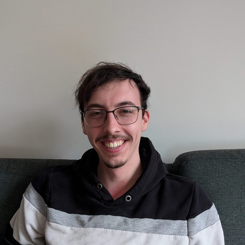
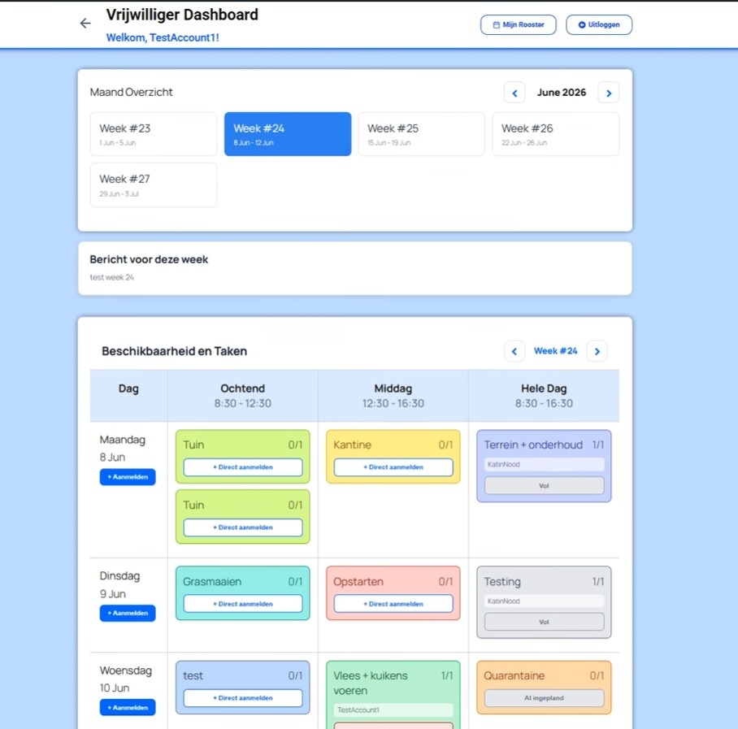
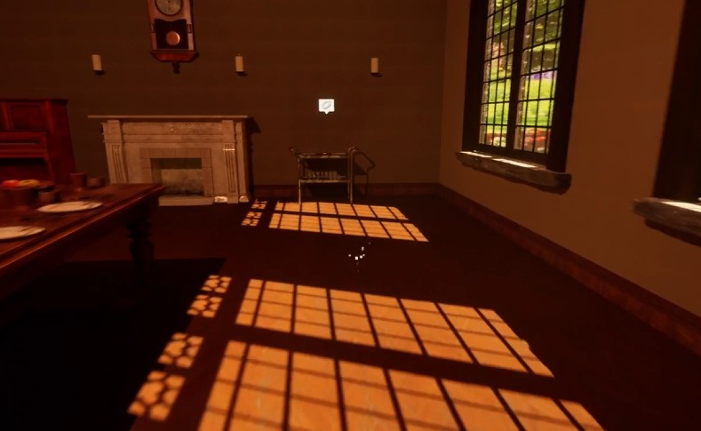
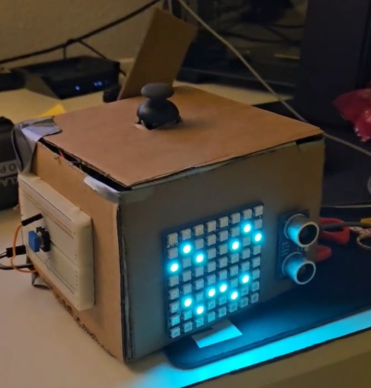

Portfolio — Groningen, NL
Junior Web & Game Developer
Ik hou van bouwen — of dat nu een website is, een game, of een robot van karton. Dit zijn drie projecten die laten zien hoe ik denk en werk.
Build log

Log_01 — Web
Voor Stichting Kat in Nood ontwikkelde ik een digitaal roostersysteem waarmee vrijwilligers zich kunnen inschrijven voor taken en coördinatoren overzicht houden. Op basis van gesprekken met vrijwilligers en coördinatoren bouwde ik een werkend WordPress-prototype met PHP, ACF en Custom Post Types.

Log_02 — Game
Een soort walking simulator waarin je door oude kamers van Borg Nienoord loopt. Objecten in de ruimte komen tot leven zodra je ermee interacteert en vertellen een eigen verhaal over zichzelf of hun omgeving, aangevuld met NPC's die je onderweg tegenkomt. Het idee: bezoekers op een leukere manier kennis laten maken met de geschiedenis van de plek dan een tekstbordje aan de muur.

Log_03 — Hardware
Een zelfgebouwde robothond van karton, aangestuurd door twee Arduino's die met elkaar communiceren. De robot simuleert drie zintuigen: een afstandssensor als 'zicht', een knop als 'gehoor' en een joystick als 'gevoel'. Een LED-matrix toont verschillende gezichten, en een servomotor doet dienst als staart.
Toolbox